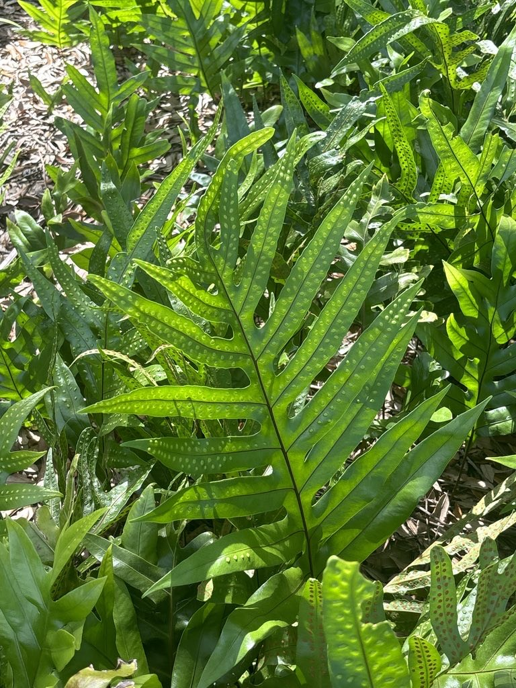

- Crush a fresh frond and take a sniff — musk fern releases a sweet, distinctive fragrance that gave it its common name. Visitors most often compare it to maile, the prized Hawaiian vine, with overtones of vanilla and sweet hay. That scent is exactly why its foliage became culturally important in Hawaiʻi, where fragrant fronds are still woven into lei today.
- This fern was hiding behind the wrong name. For decades, much of South Florida's serpent fern was identified as Microsorum scolopendria. A 2015 study by Possley and Howell showed that the Florida plants examined were actually M. grossum — an identification correction that changed how this invasive fern is recorded and understood.
- Feel the tiny bumps on the top of a mature frond. They are not damage or disease: each raised spot corresponds to a sorus (plural: sori) — a tiny cluster of spore-producing structures — on the underside of the leaf.
- Beautiful does not always mean harmless. Introduced as an ornamental, musk fern has escaped cultivation in South Florida and is listed as a Category I invasive species by the Florida Invasive Species Council (FISC).
Musk fern is native to tropical Asia, northern Australia, New Guinea, and many islands of the western and central Pacific. Its historical range is somewhat difficult to define precisely because it was long confused with the closely related Microsorum scolopendria, and older records may reflect that misidentification.
In Florida, musk fern arrived as a cultivated ornamental and has since naturalized in South Florida, particularly in Broward, Miami-Dade, and Monroe counties. The Flora of the Southeastern United States records it growing epiphytically (on trees) or terrestrially (along the ground) in disturbed hammocks, other disturbed uplands, and mangroves.
Its wind-dispersed spores make it a capable colonizer once established.
- For most of its documented history in Florida, this fern went by the wrong name. It was widely sold, planted, and catalogued as Microsorum scolopendria — a related but distinct species. A 2015 paper in the American Fern Journal by Possley and Howell compared Florida plants with both species and concluded that the Florida material examined matched M. grossum.
- The official FISC list added a footnote to this effect when M. grossum was added in 2019.
- The two species are genuinely similar, but M. grossum tends to have stouter rhizomes (about 5 mm wide when dry), fronds usually with more than five pairs of lobes, and a sweet scent when fresh that M. scolopendria typically lacks. Getting the name right matters: it changed where this fern appears in herbarium records, invasive-species databases, and conservation planning.
- The common names tell the plant's story at a glance. Wart Fern refers to the prominent bumps visible on the upper surface of a mature frond — each one a sorus, a cluster of spore-producing structures, pushing through from below. Serpent Fern reflects the long, sinuous, green-and-brown rhizomes that thread across soil and tree roots in a way that many visitors immediately compare to a snake.
- In Hawaiʻi, the story has a further layer. Research by botanist Puanani Anderson-Fung (published 2023) found no evidence that M. grossum was present in the islands before 1919. Historical records and herbarium specimens indicated that the original lauaʻe — the fragrant fern celebrated in Hawaiian culture — was actually Microsorum spectrum, a native Hawaiian species now proposed as lauaʻe maoli.
- As M. spectrum's populations declined and the introduced M. grossum spread rapidly across all the main islands, the introduced plant gradually took over both the landscape and the cultural name.
- The introduced fern is now known in Hawaiʻi as lauaʻe hānai — the adopted lauaʻe — and its fragrant fronds, with their sweet, maile-like scent, are used in lei and to scent kapa fabric, roles that originally belonged to the native species.
- Older literature and horticultural sources may also list this plant under the synonym Phymatosorus grossus, which remains useful to know when consulting earlier Florida and Hawaiian records.
As a non-native fern with no co-evolutionary history with Florida's fauna, Microsorum grossum is not a significant food resource for local wildlife. Like other ferns, it produces no flowers, nectar, fruits, or seeds — it reproduces entirely by wind-dispersed spores and requires no animal intermediary.
Its foliage and rhizomes can provide physical cover for small invertebrates, and it may be incidentally used as shelter by small vertebrates, but no specific Florida butterfly, moth, or other wildlife associations have been documented in the sources reviewed for this page. Visitors looking for the park's richest pollinator habitat will find it among the native flowering plantings.
Like all ferns, Microsorum grossum does not flower or set seed. It reproduces via spores, which are wind-dispersed from the undersides of mature fronds. It also spreads vegetatively through its creeping rhizomes, which root as they travel across soil or bark.
Spores are produced in sori (singular: sorus) — clusters of spore-producing structures called sporangia — arranged in two irregular rows on either side of the midrib on the underside of each frond lobe. The sori sit in shallow depressions in the lower leaf surface; from the upper side, you can feel them as small raised bumps.
There is no protective covering (indusium) over the sori in this species.
The rhizomes are fleshy, long-creeping, and roughly 5 mm in diameter when dry, covered in pale brown scales with a lighter, almost translucent margin at the tip. The plant spreads vegetatively as rhizomes travel across soil or bark, rooting as they go.
Fronds are broadly oblong to somewhat triangular, shiny dark green, and typically 10 to 40 cm long and up to 35 cm wide — roughly the dimensions of a large book. They are usually pinnately divided into one terminal lobe and one to eight pairs of lateral lobes, with the wings of the central stalk roughly equal in width to the lobes themselves.
When fresh, fronds release a sweet, maile-like fragrance — often described as reminiscent of vanilla or sweet hay — that gives this fern its common name.
Start with the fronds: broad, shiny, dark green, and lobed like a thick-fingered hand. Flip a frond over and look along the underside of each lobe for the sori — small round or slightly elongated dots arranged in two irregular rows on either side of the central vein. Now run a finger across the top of the same frond; you should be able to feel the sori as faint raised bumps beneath the surface.
At the base of the plant, look for the stout, scaly, creeping rhizome threading along the ground or across tree roots.
No known toxicity to people, dogs, or cats. Nobody eats this fern, but it presents no hazard.
For decades, nearly all the serpent fern in Florida nurseries and natural areas was misidentified as the related Microsorum scolopendria. A 2015 study by Possley and Howell clarified that the Florida material examined was actually M. grossum. The two are genuinely similar, but M.
grossum has stouter rhizomes (about 5 mm wide when dry), fronds typically with more than five pairs of lobes, and a distinctive sweet scent when fresh that M. scolopendria typically lacks.
Older literature and horticultural sources — including some Florida and Hawaiian records — may list this plant under the synonym Phymatosorus grossus. That name is no longer accepted by Kew's Plants of the World Online, which treats Microsorum grossum as the correct name, but it is worth knowing when consulting older references.


- © Ardeljan_A_691 (CC-BY-NC), via iNaturalist
- © Randall Carter (CC-BY-NC), via iNaturalist